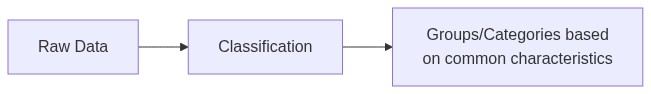
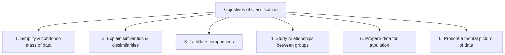
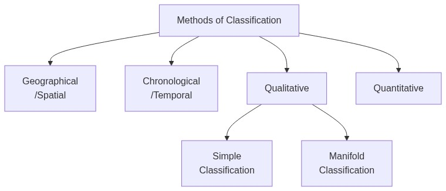
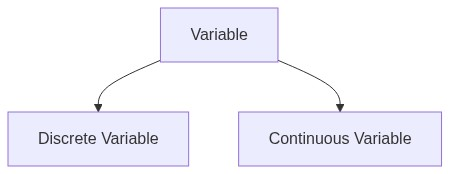
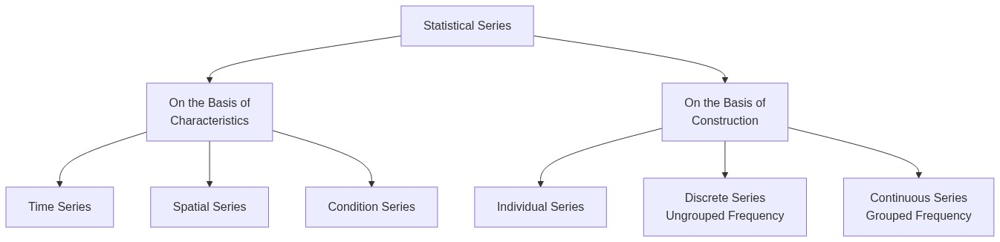
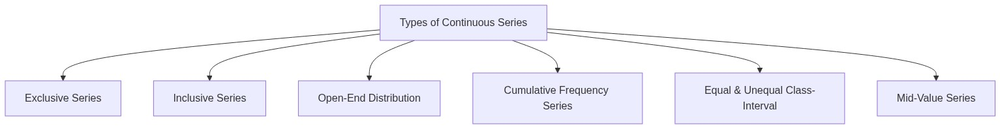

Organisation of Data — Complete Revision Notes
Subject: Statistics for Economics | Class 11
1. Introduction
The data collected from primary and secondary sources is referred to as 'raw data' or 'unclassified data'. This raw data is like a pile of bricks — it needs to be arranged systematically before it can be used constructively.
Organisation of data means to present the data in a form which facilitates easy understanding and makes it suitable for further processing and interpretation.
Raw Data → Organisation → Classification → Tabulation → Analysis → Interpretation
2. Meaning of Classification
Classification is the process of arranging data into sequences and groups according to their common characteristics or separating them into different but related parts.
In simple words — classification is the process of sorting data into groups based on shared features.

2.1 Objectives of Classification

| Objective | Explanation |
|---|---|
| Simplify & Condense | Reduces huge data into manageable groups |
| Explain Similarities & Dissimilarities | Shows which items are alike and which are different |
| Facilitate Comparisons | Makes it easy to compare different groups |
| Study Relationships | Helps understand how variables are related |
| Prepare for Tabulation | Classification is the first step before creating tables |
| Present Mental Picture | Gives a clear overall view of the data |
2.2 Requisites of a Good Classification
| Requisite | Meaning |
|---|---|
| Suitable | The classification should serve the purpose of investigation |
| Unambiguous & Clear | Each item should clearly belong to only one class |
| Exhaustiveness | Every observation must find a place in some class — no data should be left out |
| Flexible | Should be adaptable to different situations |
| Mutually Exclusive | Each observation must belong to only one class — no overlapping |
| Stability | Classification should be stable for comparison purposes |
3. Methods of Classification

3.1 Geographical Classification (Spatial Classification)
When data is classified according to geographical location or region (such as countries, states, districts, etc.), it is known as geographical classification.
Example — Population of 5 States of India (Census 2011):
| State | Andhra Pradesh | Tamil Nadu | Rajasthan | Karnataka | Gujarat |
|---|---|---|---|---|---|
| Population (in '000) | 84,665 | 72,138 | 68,621 | 61,130 | 60,383 |
Source: Census of India, 2011
3.2 Chronological Classification (Temporal Classification)
When data is classified with respect to different periods of time (such as decade, years, months, etc.), it is known as chronological classification.
Example — Population of Delhi (1951–2011):
| Year | 1951 | 1961 | 1971 | 1981 | 1991 | 2001 | 2011 |
|---|---|---|---|---|---|---|---|
| Population (in '000) | 1,744 | 2,659 | 4,066 | 6,220 | 9,421 | 13,851 | 16,753 |
Source: Census of India, 2011
3.3 Qualitative Classification
In qualitative classification, data is classified on the basis of descriptive characteristics or attributes like sex, literacy, region, caste, education, etc. — which cannot be measured quantitatively.
(A) Simple Classification
When facts are classified into two classes according to one attribute only, it is called simple classification.
Example — Population classified by Gender:
Population
/ \
Males Females
(B) Manifold Classification
When facts are classified according to more than one attribute, or when each class is sub-divided into more than two sub-classes, it is called manifold classification.
Example — Population classified by Gender, Literacy & Religion:
Population
/ \
Males Females
/ \ / \
Literate Illiterate Literate Illiterate
/ \ / \ / \ / \
Hindu Non-Hindu ... ... ... ... ...
3.4 Quantitative Classification (Numerical Classification)
In this classification, data is classified on the basis of characteristics which can be measured — such as height, weight, income, expenditure, production, or sales.
Example — Age Distribution of Students:
| Age (in Years) | Number of Students |
|---|---|
| 10–12 | 150 |
| 12–14 | 130 |
| 14–16 | 100 |
| 16–18 | 120 |
| Total | 500 |
3.5 Methods of Classification — Comparison Table
| Basis | Geographical | Chronological | Qualitative | Quantitative |
|---|---|---|---|---|
| Criteria | Location/Region | Time Period | Attributes (non-measurable) | Quantities (measurable) |
| Example | States, Countries | Years, Months | Gender, Literacy | Height, Weight, Income |
| Nature | Spatial | Temporal | Descriptive | Numerical |
| Further division | — | — | Simple/Manifold | Discrete/Continuous |
4. Concept of Variable
A variable refers to a quantity or characteristic whose value varies from one investigation to another. The difference in value may be with respect to individuals, items, places, or time.
Each value within such a range is called a 'variate'.

4.1 Discrete Variable (Discontinuous Variable)
Definition: Variables which are capable of taking only exact or finite values and generally not any fractional value.
- Change in value: Increases in complete numbers (1, 2, 3...)
- Data collection: Obtained by counting
- Examples: Number of workers in a factory, number of students in a class, number of children in a family
Example — Number of Children in 40 Families:
| Number of Children | Number of Families |
|---|---|
| 0 | 7 |
| 1 | 5 |
| 2 | 25 |
| 3 | 3 |
| Total | 40 |
4.2 Continuous Variable
Definition: Those variables which can take all possible values (integral as well as fractional) in a given specified range.
- Change in value: Can increase in fractions as well as whole numbers
- Data collection: Obtained by measurement
- Examples: Height of a person (5.6 ft, 5.7 ft), weight of individuals (42.7 kg, 55.3 kg), temperature
Example — Weight of 47 Students:
| Weight (in kg) | Number of Students |
|---|---|
| 40–45 | 22 |
| 45–50 | 6 |
| 50–55 | 9 |
| 55–60 | 10 |
| Total | 47 |
4.3 Discrete vs Continuous Variable — Comparison
| Basis | Discrete Variable | Continuous Variable |
|---|---|---|
| Meaning | Takes only exact/finite values, generally no fractions | Can take all possible values (integral + fractional) |
| Change in Value | Increases in complete numbers (1, 2, 3...) | Can increase in fractions as well |
| Data Collection | Obtained by counting | Obtained by measurement |
| Examples | Number of workers, number of students, number of cars | Height, weight, temperature, time |
5. Frequency and Frequency Distribution
5.1 Frequency
Frequency refers to the number of times a given value appears in a distribution.
Example: Suppose there are 20 students in a class:
- 9 students scored 70 marks
- 6 students scored 85 marks
- 5 students scored 92 marks
Here, frequencies are 9, 6, and 5 respectively.
5.2 Frequency Distribution
A frequency distribution is a table in which the frequencies and the associated values of a variable are written side by side.
Marks (Variable) → 70 85 92 Frequency → 9 6 5
6. Statistical Series
The arrangement of classified data in some logical order — like according to size, according to time of occurrence, or according to some other measurable or non-measurable characteristics — is known as a Statistical Series.
6.1 Kinds of Statistical Series

6.2 On the Basis of Characteristics
| Type | Description | Example |
|---|---|---|
| Time Series | Values arranged in chronological order | Population of Delhi from 1951–2011 |
| Spatial Series | Data arranged according to location/region | Population of different states |
| Condition Series | Data classified under certain conditions | Students passed under different grading systems |
6.3 On the Basis of Construction
(A) Individual Series
Individual series refers to that series in which items are listed singly — each item is given a separate value.
Unorganised Individual Series (Raw Data):
Marks of 10 students: 35, 40, 38, 17, 25, 45, 36, 29, 42, 22
Organised Individual Series (Ordered):
| S. No. | 1 | 2 | 3 | 4 | 5 |
|---|---|---|---|---|---|
| Marks | 35 | 40 | 38 | 17 | 25 |
(B) Discrete Series (Ungrouped Frequency Distribution)
A discrete series is that series where individual values differ from each other by a definite amount (usually by whole numbers).
Construction using Tally Marks:
| Marks | Tally Marks | Frequency |
|---|---|---|
| 10 | || | 2 |
| 15 | |||| | 4 |
| 20 | ||| | 3 |
| 25 | || | 2 |
| Total | 11 |
(C) Continuous Series (Grouped Frequency Distribution)
A continuous series represents continuous variables, showing a range of values of different items of the series.
Example:
| Class Interval (Marks) | Frequency (Students) |
|---|---|
| 10–20 | 6 |
| 20–30 | 5 |
| 30–40 | 9 |
| 40–50 | 10 |
| Total | 30 |
8. Types of Continuous Series

8.1 Exclusive Series
Definition: Classes where the upper limit of one class-interval becomes the lower limit of the next class are known as exclusive classes.
| Classes (Marks) | Frequency |
|---|---|
| 10–20 | 6 |
| 20–30 | 5 |
| 30–40 | 9 |
| 40–50 | 10 |
| Total | 30 |
Also known as: Mutually exclusive classification — excludes the upper class limit but includes the lower class limit.
8.2 Inclusive Series
Definition: The series in which both lower and upper limits of a class-interval are included in the interval itself.
| Classes | Frequency |
|---|---|
| 10–19 | 6 |
| 20–29 | 5 |
| 30–39 | 9 |
| 40–49 | 10 |
| Total | 30 |
Conversion Formula:
Correction Factor = (Upper Limit of 1st Class - Lower Limit of 2nd Class) / 2
Then subtract the factor from lower limits and add to upper limits.
Example — Converting Inclusive to Exclusive:
| Inclusive | Exclusive (after conversion) |
|---|---|
| 10–19 | 9.5–19.5 |
| 20–29 | 19.5–29.5 |
| 30–39 | 29.5–39.5 |
| 40–49 | 39.5–49.5 |
8.3 Exclusive vs Inclusive Series — Comparison
| Basis | Exclusive Method | Inclusive Method |
|---|---|---|
| Counting of upper limit | Upper limit is counted in the next class | Upper limit is counted in the same class |
| Overlap of limits | Upper limit of one class = lower limit of next class | Upper limit and lower limit of next class are different (usually by 1) |
| Conversion needed | No conversion needed before calculation | Must be converted to exclusive method for calculation |
| Example | 10–20, 20–30, 30–40 | 10–19, 20–29, 30–39 |
8.4 Open-End Distribution
Definition: In a frequency distribution, if the lower limit of the first class and/or the upper limit of the last class is not given, it is known as open-end distribution.
Example:
| Marks | Below 20 | 20–30 | 30–40 | 40–50 | Above 50 |
|---|---|---|---|---|---|
| No. of Students | 7 | 6 | 12 | 15 | 8 |
8.5 Cumulative Frequency Distribution
In cumulative frequency distribution, frequencies are presented in cumulative form either in increasing or decreasing order.
(A) 'Less Than' Cumulative Frequency Distribution
Frequencies of each class-interval are added successively from top to bottom.
| Marks | No. of Students (c.f.) | Calculation |
|---|---|---|
| Less than 10 | 2 | 2 |
| Less than 20 | 7 | 2 + 5 = 7 |
| Less than 30 | 17 | 2 + 5 + 10 = 17 |
| Less than 40 | 29 | 2 + 5 + 10 + 12 = 29 |
| Less than 50 | 46 | 2 + 5 + 10 + 12 + 17 = 46 |
| Less than 60 | 50 | 2 + 5 + 10 + 12 + 17 + 4 = 50 |
(B) 'More Than' Cumulative Frequency Distribution
Cumulative frequencies are obtained by finding totals starting from the highest value to the lowest value.
| Marks | No. of Students (c.f.) | Calculation |
|---|---|---|
| More than 0 | 50 | 2 + 5 + 10 + 12 + 17 + 4 = 50 |
| More than 10 | 48 | 5 + 10 + 12 + 17 + 4 = 48 |
| More than 20 | 43 | 10 + 12 + 17 + 4 = 43 |
| More than 30 | 33 | 12 + 17 + 4 = 33 |
| More than 40 | 21 | 17 + 4 = 21 |
| More than 60 | 4 | 4 |
8.6 Equal and Unequal Class-Interval Series
(A) Equal Class-Interval Series
When all classes in a series have the same interval.
| Class-Interval | Frequency |
|---|---|
| 10–20 | 7 |
| 20–30 | 4 |
| 30–40 | 3 |
| 40–50 | 6 |
| 50–60 | 3 |
| Total | 23 |
(B) Unequal Class-Interval Series
When class-intervals are not equal.
| Class-Interval | Frequency |
|---|---|
| 10–20 | 6 |
| 20–40 | 15 |
| 40–70 | 12 |
| 70–80 | 4 |
| 80–110 | 3 |
| Total | 40 |
8.7 Mid-Value Series
Mid-value or Mid-point is the middle value of a class-interval. When such mid-values are given instead of class limits, it is called a mid-value series.
Steps to Convert Mid-Value Series to Continuous Series:
| Step | Action |
|---|---|
| Step 1 | Calculate the difference between two consecutive mid-values |
| Step 2 | Divide the difference by 2 to get half the difference |
| Step 3 | Subtract half the difference from each mid-value to get the lower limit |
| Step 4 | Add half the difference to each mid-value to get the upper limit |
Example:
| Mid-Value | Half Difference | Lower Limit | Upper Limit | Class Interval | Frequency |
|---|---|---|---|---|---|
| 5 | 5 | 5 − 5 = 0 | 5 + 5 = 10 | 0–10 | 4 |
| 15 | 5 | 15 − 5 = 10 | 15 + 5 = 20 | 10–20 | 8 |
| 25 | 5 | 25 − 5 = 20 | 25 + 5 = 30 | 20–30 | 10 |
| 35 | 5 | 35 − 5 = 30 | 35 + 5 = 40 | 30–40 | 6 |
| 45 | 5 | 45 − 5 = 40 | 45 + 5 = 50 | 40–50 | 2 |
| Total | 30 |
9. Bivariate Frequency Distribution
9.1 Univariate vs Bivariate Frequency Distribution
When data is classified on the basis of two variables (such as height and weight, marks in Maths and Statistics, etc.), the distribution is known as Bivariate frequency distribution or Two-way frequency distribution.
| Basis | Univariate Distribution | Bivariate Distribution |
|---|---|---|
| Meaning | Data classified on the basis of a single variable | Data classified on the basis of two variables |
| Purpose | Describes a particular variable | Determines empirical relationship between two variables |
| Also known as | One-way frequency distribution | Two-way frequency distribution |
| Example | Height of students in a class | Height and Weight of students in a class |
9.2 Example — Bivariate Frequency Distribution
Marks of 15 Students in Accounts and Economics:
| Accounts \ Economics | 19 | 20 | 21 | 22 | Total |
|---|---|---|---|---|---|
| 25 | 3 | — | — | — | 3 |
| 26 | — | 4 | — | — | 4 |
| 27 | — | — | 6 | — | 6 |
| 28 | — | — | — | 2 | 2 |
| Total | 3 | 4 | 6 | 2 | 15 |
10. Key Terms — Quick Reference
11. Practice Questions
11.1 Multiple Choice Questions
Q1. Upper limit of any class is:
- (a) Same as the lower limit of the next class in exclusive series
- (b) Different in inclusive series
- (c) Both (a) and (b)
- (d) None of these
Q2. In inclusive class-intervals of a frequency distribution:
- (a) Upper limit of each class-interval is included
- (b) Lower limit of each class-interval is included
- (c) Both (a) and (b)
- (d) None of these
Q3. For determining class frequencies, it is necessary that these classes are:
- (a) Mutually exclusive
- (b) Not mutually exclusive
- (c) Independent
- (d) None of these
Q4. The lower class boundary is:
- (a) An upper limit to Lower Class Limit
- (b) A lower limit to Lower Class Limit
- (c) Both (a) and (b)
- (d) None of these
Q5. In an individual series, each variate value has:
- (a) Same frequency
- (b) Frequency one
- (c) Varied frequency
- (d) Frequency two
Q6. Drinking habit of a person is:
- (a) An attribute
- (b) A discrete variable
- (c) A variable
- (d) A continuous variable
Q7. The number of observations falling within a class is called:
- (a) Density
- (b) Frequency
- (c) Both (a) and (b)
- (d) None of these
Q8. Annual income of a person is:
- (a) A continuous variable
- (b) A discrete variable
- (c) An attribute
- (d) Either (b) or (c)
Q9. An open-end series is that series in which:
- (a) Lower limit of the first class-interval is missing
- (b) Upper limit of the last class-interval is missing
- (c) Both (a) and (b)
- (d) Class-intervals are unequal
Q10. A frequency distribution can be:
- (a) Discrete
- (b) Continuous
- (c) Both (a) and (b)
- (d) None of these
Q11. Mutually exclusive classification:
- (a) Excludes the upper class limit but includes the lower class limit
- (b) Excludes both the class limits
- (c) Includes the upper class limit but excludes the lower class limit
- (d) Either (b) or (c)
Q12. Which of the following is a cumulative frequency distribution?
- (a) Less than Series
- (b) More than Series
- (c) Both (a) and (b)
- (d) Open-end Series
Q13. Class-interval is measured as:
- (a) Half of the sum of lower and upper limit
- (b) The sum of the upper and lower limit
- (c) Half of difference between upper and lower limit
- (d) The difference between upper and lower limit
Q14. The data given as 5, 7, 12, 17, 79, 84, 91 will be called as:
- (a) A continuous series
- (b) A discrete series
- (c) An individual series
- (d) Time series
11.2 Assertion-Reason Questions
Q15.
Assertion (A): In case of Inclusive Series, the value of upper limit of a class never equals the value of lower limit of the next class.
Reason (R): Class frequencies are same in both exclusive and inclusive series, although the class-intervals are apparently different in the two cases.
Alternatives:
- (a) Both (A) & (R) are True & (R) is the correct explanation of (A)
- (b) Both (A) & (R) are True & (R) is NOT the correct explanation of (A)
- (c) (A) is True but (R) is False
- (d) (A) is False but (R) is True
Q16.
Assertion (A): Exclusive Series ensures continuity of data.
Reason (R): In case of exclusive series, upper limit of one class is the lower limit of succeeding class.
Alternatives:
- (a) Both (A) & (R) are True & (R) is the correct explanation of (A)
- (b) Both (A) & (R) are True & (R) is not the correct explanation of (A)
- (c) (A) is True but (R) is False
- (d) (A) is False but (R) is True
Q17.
Assertion (A): Population of different states of India as per Census 2011 is an example of Temporal Classification.
Reason (R): In case of Temporal Classification, data is classified with respect to different periods of time.
Alternatives:
- (a) Both (A) & (R) are True & (R) is the correct explanation of (A)
- (b) Both (A) & (R) are True & (R) is not the correct explanation of (A)
- (c) (A) is True but (R) is False
- (d) (A) is False but (R) is True
11.3 Statement-Based Questions
Q18. Read the following statements carefully and choose the correct alternative:
Statement 1: Classification facilitates grouping of data according to certain similarities and dissimilarities.
Statement 2: Classification provides a basis for tabulation and further statistical processing.
Alternatives:
- (a) Both the statements are true
- (b) Both the statements are false
- (c) Statement 1 is true & Statement 2 is false
- (d) Statement 2 is true & Statement 1 is false
Q19. Read the following statements carefully and choose the correct alternative:
Statement 1: Discrete Variables are capable of taking exact value as well as fractional value.
Statement 2: In case of discrete variable, data is obtained by measurement.
Alternatives:
- (a) Both the statements are true
- (b) Both the statements are false
- (c) Statement 1 is true & Statement 2 is false
- (d) Statement 2 is true & Statement 1 is false
Q20. Read the following statements carefully and choose the correct alternative:
Statement 1: In case of open-end distribution, upper limit of first class and lower limit of last class is not given.
Statement 2: Open-end classes create problem in the graphic presentation of the data.
Alternatives:
- (a) Both the statements are true
- (b) Both the statements are false
- (c) Statement 1 is true & Statement 2 is false
- (d) Statement 2 is true & Statement 1 is false
11.4 Numerical Questions
Q21. The following are the marks of 30 students in Statistics. Prepare a frequency distribution taking the class-intervals:
12, 33, 23, 25, 18, 35, 37, 49, 54, 51, 37, 15, 33, 42, 45, 47, 55, 69, 65, 63, 46, 29, 18, 37, 46, 59, 29, 35, 45, 27
Answer:
| Class Interval | Tally Marks | Frequency |
|---|---|---|
| 10–20 | |||| | 4 |
| 20–30 | |||| | 4 |
| 30–40 | |||| |||| | 9 |
| 40–50 | |||| ||| | 8 |
| 50–60 | |||| | 4 |
| 60–70 | ||| | 3 |
| Total | 30 |
Q22. Prepare a frequency table taking class intervals 20–24, 25–29, 30–34 and so on, from the following data:
21, 20, 55, 39, 48, 46, 36, 54, 42, 30, 29, 42, 32, 40, 34, 31, 35, 37, 52, 44, 39, 45, 37, 33, 51, 53, 52, 46, 43, 47, 41, 26, 52, 48, 25, 34, 37, 33, 36, 27, 54, 36, 41, 33, 23, 39, 28, 44, 45, 38
(Hint: Use inclusive classes and then convert if needed)
Q23. From the following data, identify the lower limit of the first class and upper limit of the last class:
| Daily Wages | Less than 120 | 120–140 | 140–160 | 160–180 | Above 180 |
|---|---|---|---|---|---|
| No. of Workers | 35 | 12 | 10 | 40 | 13 |
Answer:
- Lower limit of first class = 0 (or not given — open-end)
- Upper limit of last class = not given — open-end distribution
Q24. Convert the following 'more than' cumulative frequency distribution into a 'less than' cumulative frequency distribution:
| Class-Interval (More than) | 10 | 20 | 30 | 40 | 50 | 60 | 70 | 80 |
|---|---|---|---|---|---|---|---|---|
| Frequency | 124 | 119 | 107 | 84 | 55 | 31 | 12 | 2 |
Q25. Prepare a frequency distribution from the following mid-value data:
| Mid Point | 25 | 35 | 45 | 55 | 65 | 75 |
|---|---|---|---|---|---|---|
| Frequency | 6 | 10 | 9 | 12 | 8 | 5 |
Answer:
Here, difference between mid-values = 10, half difference = 5.
| Mid Point | Lower Limit | Upper Limit | Class Interval | Frequency |
|---|---|---|---|---|
| 25 | 25−5=20 | 25+5=30 | 20–30 | 6 |
| 35 | 35−5=30 | 35+5=40 | 30–40 | 10 |
| 45 | 45−5=40 | 45+5=50 | 40–50 | 9 |
| 55 | 55−5=50 | 55+5=60 | 50–60 | 12 |
| 65 | 65−5=60 | 65+5=70 | 60–70 | 8 |
| 75 | 75−5=70 | 75+5=80 | 70–80 | 5 |
| Total | 50 |
Q26. Prepare a bivariate frequency distribution for the following data for 20 students:
| Marks in Maths | 10 | 11 | 10 | 11 | 11 | 14 | 12 | 12 |
|---|---|---|---|---|---|---|---|---|
| Marks in Stats | 20 | 21 | 22 | 21 | 23 | 23 | 22 | 21 |
| Marks in Maths | 13 | 12 | 11 | 12 | 10 | 14 | 14 | 12 |
|---|---|---|---|---|---|---|---|---|
| Marks in Stats | 24 | 23 | 22 | 23 | 22 | 22 | 24 | 20 |
Answer:
| Maths \ Stats | 20 | 21 | 22 | 23 | 24 | Total |
|---|---|---|---|---|---|---|
| 10 | 1 | — | 2 | — | — | 3 |
| 11 | — | 2 | 1 | 1 | — | 4 |
| 12 | 1 | 1 | 1 | 1 | — | 4 |
| 13 | — | — | — | — | 1 | 1 |
| 14 | — | — | 1 | 1 | 1 | 3 |
| Total | 2 | 3 | 5 | 3 | 2 | 15 |
Chapter at a Glance — Quick Revision Card
| Topic | Key Point |
|---|---|
| Classification | Arranging data into groups based on common characteristics |
| 4 Methods of Classification | Geographical, Chronological, Qualitative (Simple/Manifold), Quantitative |
| Variable | Characteristic whose value varies — Discrete (counting) or Continuous (measurement) |
| Frequency | Number of times a value appears in a distribution |
| Statistical Series | Logical arrangement of classified data |
| Individual Series | Each item listed singly (unorganised or organised) |
| Discrete Series | Ungrouped frequency distribution — values differ by definite amounts |
| Continuous Series | Grouped frequency distribution — shows range of values |
| Exclusive Series | Upper limit excluded → goes to next class (10–20, 20–30) |
| Inclusive Series | Both limits included (10–19, 20–29) — must convert for calculations |
| Open-end Distribution | First class lower limit or last class upper limit missing |
| Cumulative Frequency | Running total — 'Less than' (top→bottom) or 'More than' (bottom→top) |
| Mid-Value Series | Given mid-points → convert by adding/subtracting half the difference |
| Bivariate Distribution | Classification based on two variables (two-way table) |